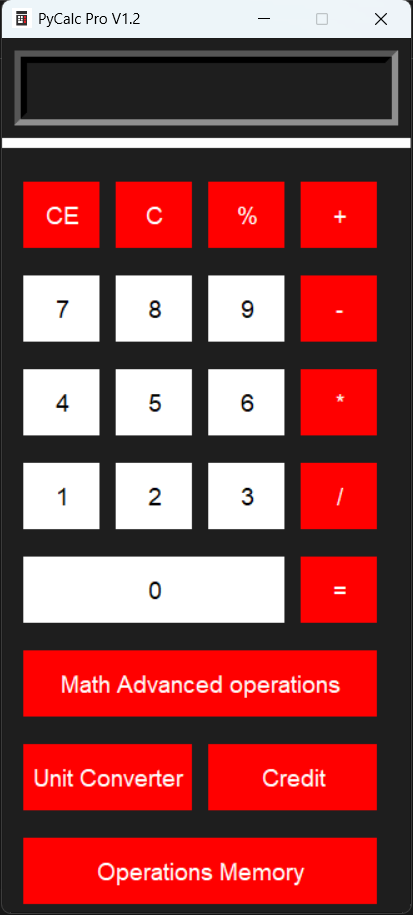
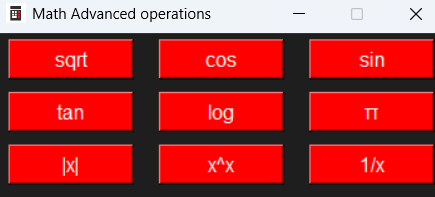
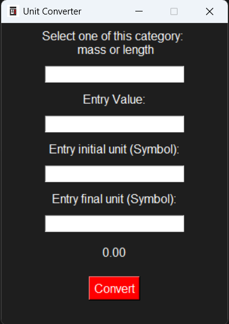
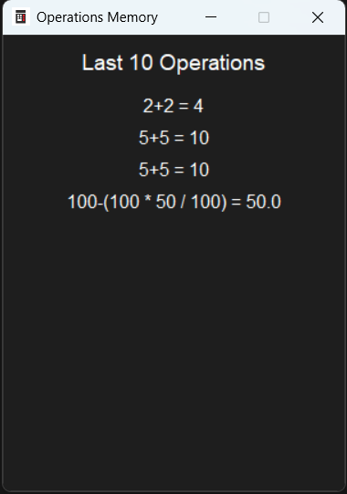

PyCalc Pro
PyCalc Pro is a professional and
and easy to use
calculator developed in Python

PyCalc Pro is a professional and
and easy to use
calculator developed in Python
PyCalc Pro is Developed in Python Language using:
Thikinter Library for GUI Development
Math Library for Math basic and advanced operations and more
PyCalc Pro have:
basic and advanced functions for example sqrt() sin() etc.
a unit conversion function for mass and length
and operations memory that stores all the operations performed.
Download PyCalc Pro V1.5 Relase Date 02/04/2025
The download is only for Windows OS
Thank you for downloading PyCalc Pro V1.2. Before using the software, please take a moment to review the terms of use outlined below.
Your compliance with these terms ensures the responsible and appropriate use of this application.
Terms of use update date: 02/04/2025
Thank You again from LDM Dev.
Python is a trademark of the Python Software Foundation. This project is not affiliated with or endorsed by the PSF.
Icons used in this project are provided by Font Awesome.